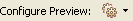

This Help topic describes how to preview a Cascading Style Sheet (CSS) for a project, file, or your entire workspace.
Contents |
Introduction
In Aptana Studio, you can preview what the CSS will look like for a file or project, or even your entire workspace. By default, CSS uses a generic HTML template file to display the CSS preview, although you can specify an external file or URL in your CSS preview preferences.
Instructions
Configuring your CSS preview settings
You can configure your CSS preview settings either in your preferences, or by using the Configure Preview button  in the lower left corner of the CSS editor.
Configuring your CSS preview settings in your preferences
To configure your CSS preview settings in your preferences:
- From the Window menu in Aptana, select Preferences... to open a Preferences window.
- In the tree on the left side of the Preferences window, navigate to Aptana > Editors > CSS > Preview to display your CSS preview preferences (shown below).
- You can configure the following options on this screen:
- Specify that tabs for IE preview or Firefox preview.
- Edit the HTML template that displays the preview.
- Specify an external URL or local file to preview against.
- Click OK.
Configuring your CSS preview settings using the Configure Preview button
To configure your CSS preview settings using the Configure Preview button:
- In the File or Project View, double-click your CSS file to open it in the CSS Editor.
- In the lower right corner of the Editor, click the Configure Preview button to display the Configure Preview menu:
- Choose Edit default preview template to go directly to your CSS preview preferences.
- Choose File preview settings to configure CSS preview settings for the current open file. (Check the Override workspace settings box to make changes.)
- Choose Project preview settings to configure CSS preview settings for the current project. (Check the Override workspace settings box to make changes.)
- Choose Workspace preview settings to configure CSS preview settings for your workspace.
Previewing your CSS
To preview your CSS:
- In your File or Project View, double-click your CSS file to open the file in the CSS editor.
- In the lower left corner, click the IE Preview tab or Firefox Preview tab (shown below) to preview the file in CSS or IE.
The Preview tab displays a default HTML page that demonstrates how your CSS will look in the browser (shown below).


{kind=link}
{kind=link}
{kind=link}